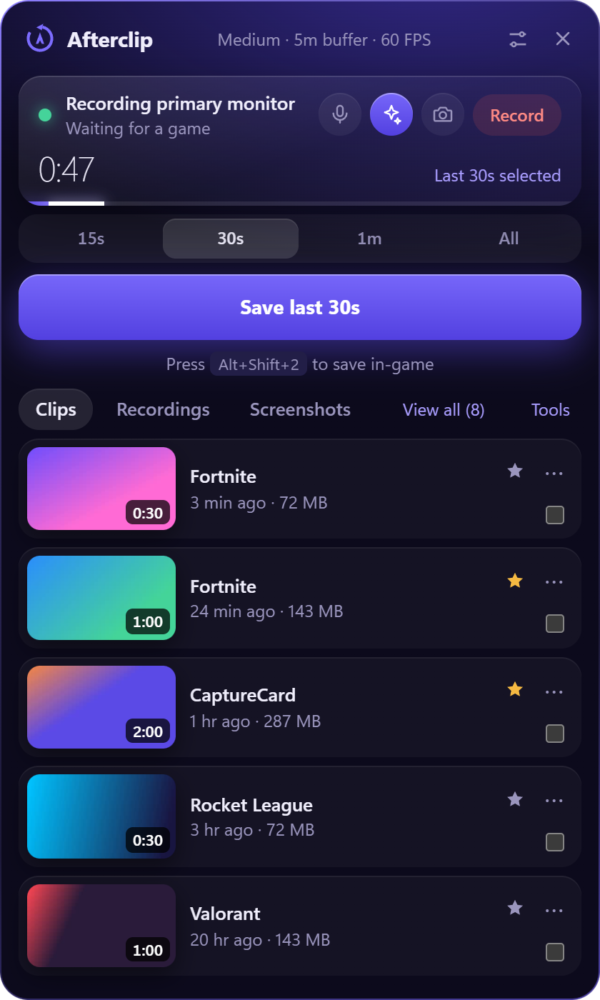
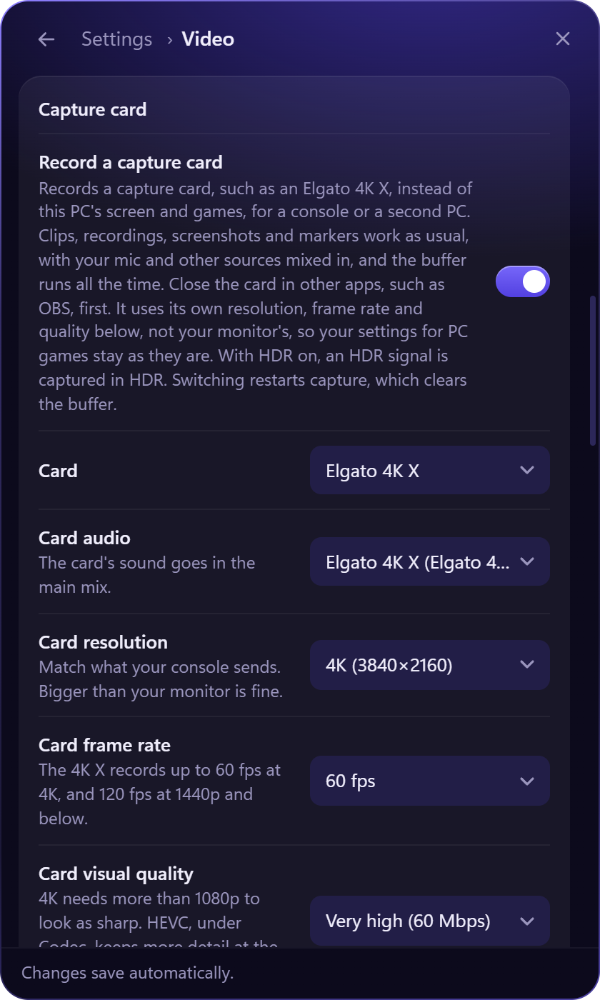
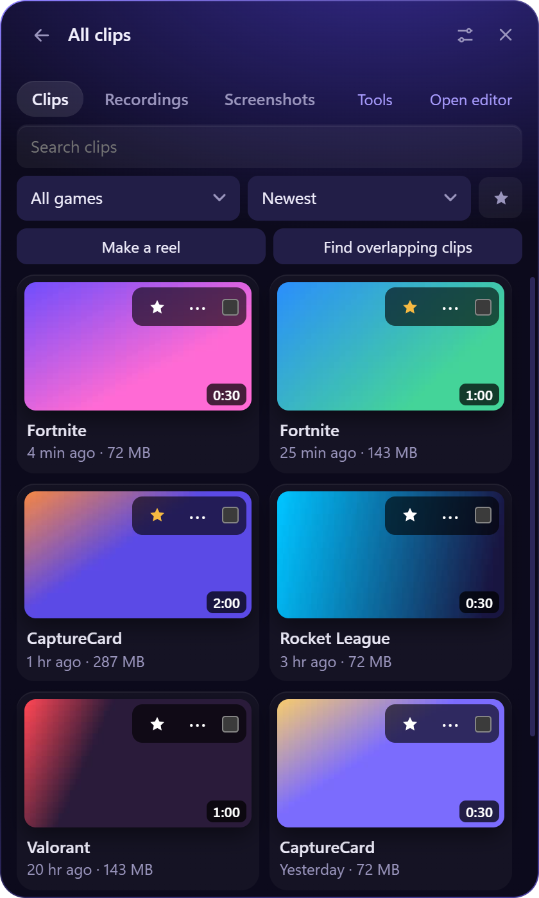
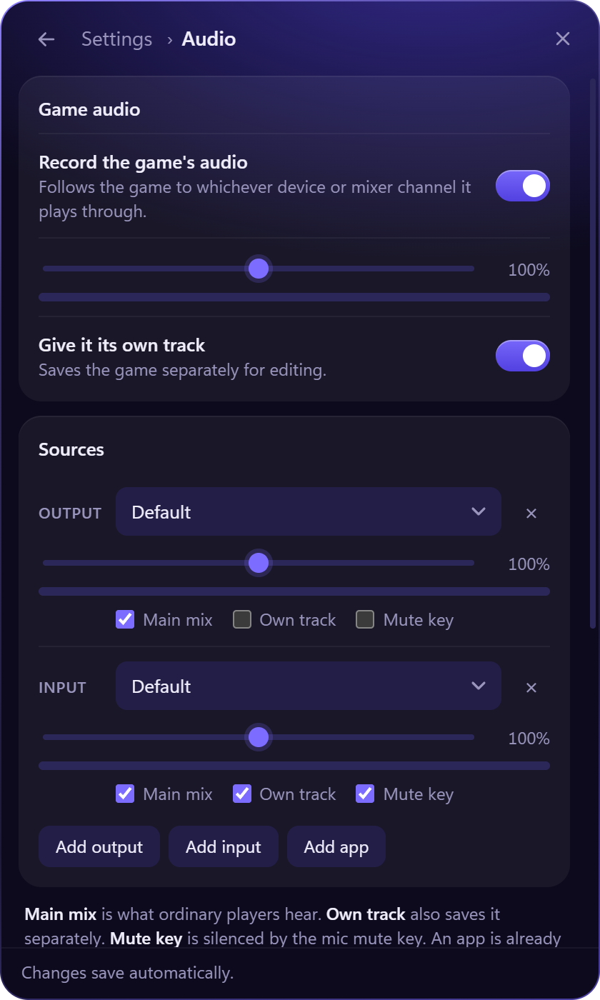
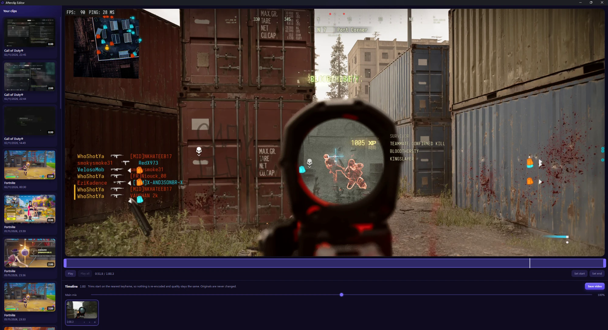
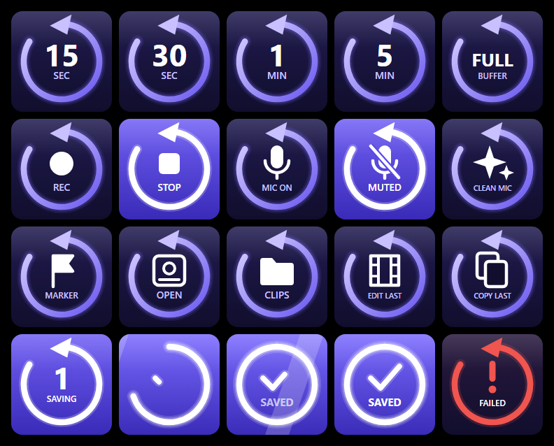
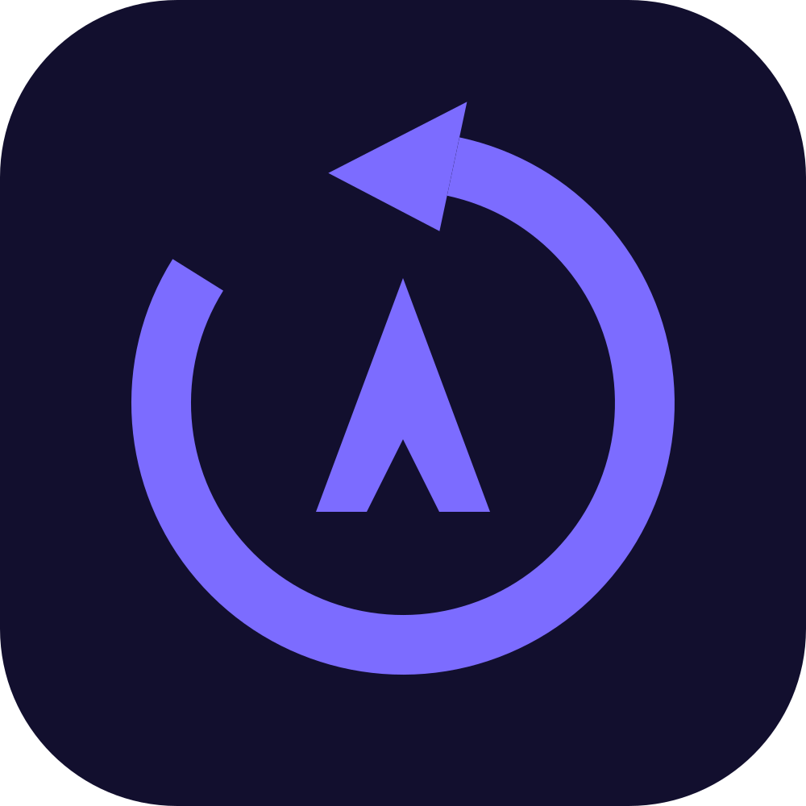

Save the moment after it happens.
Afterclip is a lightweight game clipper for Windows. It keeps your recent gameplay in a rolling buffer, so when something great happens, one key saves it. Lossless, and out of your way.
Windows 10 and 11 · NVIDIA, AMD and Intel GPUs · Free and open source

Always ready, never in the way.
There's no need to start recording first. Afterclip is already holding the last few minutes.
Play like normal
Afterclip spots fullscreen games and hooks them on its own, or records your console through a capture card. A rolling buffer keeps your recent gameplay ready.
Press a key
Use a hotkey like Alt+Shift+2, a Stream Deck key or a controller combination. A tone and popup confirm the save mid-game.
Share it
Drag the clip straight into Discord, send it to a saved channel, compress it, or make a vertical copy for your phone.
Everything you need around a clip.
Saving, recording, editing and sharing, all in one small app that lives in your tray.
Clip any length
Save the last 15 seconds, 30 minutes, the whole buffer or a custom length. Keep recording after you press, so you catch what happens next too.
Full-session recording
Record whole sessions while the clip buffer keeps running, with no extra encode. Markers become chapters, and long recordings can split on a timer.
Vertical mode and webcam
Capture in 9:16 for TikTok and Shorts, all the time or for one game. Put your webcam in any corner of every clip, or across the top of a vertical one.
Audio that stays separate
Game, mic and apps like Discord each on their own track. Clean Mic removes background noise, and push to talk keeps your mic out until you need it.
Share anywhere
Drag clips into any app, send to named Discord channels, compress to about 100 MB, or trim a range and share just that. Save a share recipe to repeat it in one click.
Settings for each game
Give any game its own quality, frame rate and buffer length. Auto-record starts a recording when the game opens and stops when it closes.
Clip loud moments
When you shout or the game gets loud, a clip saves by itself, tagged #auto. Named marker keys, like clutch or fail, tag clips and add chapters to recordings.
Long buffers, little memory
Keep a 30-minute buffer on disk instead of in RAM. When memory runs low in a game, Afterclip moves the buffer to disk by itself, without losing any of it.
Controllers and tools
Clip from a controller, such as a DualSense, by holding Create and pressing R3. Tools adds replay recovery, batch export, clip import and an audio setup check.
Clip your console too.
Record a PlayStation, Xbox, Switch or a second PC through a capture card, such as an Elgato 4K X. Clips, recordings, screenshots and markers all work the same, with your mic mixed in.
- Up to 4K at 60 fps, or 120 fps at 1440p, with its own quality settings, whatever your monitor is.
- Switch in a press between this PC and the card, from the tray, a hotkey or a Stream Deck key.
- Its own sound: a volume and meter for the card, and an optional track of its own.
- Pauses on NO SIGNAL, so your graphics card rests while the console is off.

A library that keeps itself tidy.
Find any clip by game, name or tag, and scrub through a thumbnail without opening it.
- Star, rename and tag clips, like #funny, to find them later.
- A storage limit moves your oldest clips to the Recycle Bin, and never touches favourites.
- Make a reel of your favourites or a tag, or let the weekly reel make one for you.
- Find overlapping clips saved twice for the same moment, and clean them up.
- Low disk warnings stop a recording safely before your drive fills.



A key for every move.
The free Stream Deck plugin adds keys to save any length, record, take screenshots, mute your mic in clips, send your last clip to Discord, switch to your capture card and more. Keys show live state, and a saved clip lights up the key.
- Stream Deck + dials for mic volume and picking a clip length.
- Two-PC setups: control Afterclip on your gaming PC from your streaming PC.

Get Afterclip.
Free, open source, and it updates itself.
Install on Windows
- Download the installer from the latest release.
- Run it. Windows asks for permission once.
- Afterclip starts in your tray, ready to clip.
Private by default. Afterclip asks once whether it can count you as a user, and sends nothing until you say yes. Clips never leave your PC unless you share them.
The installer isn't code-signed yet, so Windows may show a SmartScreen warning. Choose More info, then Run anyway.
Stream Deck plugin
Download the .streamDeckPlugin file from the same release and double-click it to install.
Updates
Afterclip downloads new versions itself and waits while you're in a game or recording. It refuses any update that isn't signed.
What's new
See the patch notes for every version.

Never miss the play again.
Install it once and forget about it until the moment comes.